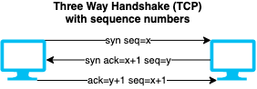

Session hijacking
- Targeting a session between two machines to gain access
- Exploits vulnerabilities in session generation logic.
- Common ways are to guess or steal a valid session token.
- Types
- Passive session hijacking: Monitoring the traffic without interference, e.g. through sniffers.
- Active session hijacking: Becoming participant in the communication with target server.
- Spoofing vs Hijacking
- Spoofing: attacker pretends to be another user
- Hijacking: process of taking over an existing active session
Steps of session hijacking
- Sniff the network traffic between two machines
- Using e.g. Wireshark, Capsa Network Analyzer, Windump, Ettercap etc.
- Monitor the traffic to predict sequence numbers
- E.g. using a proxy server trojan to change the proxy settings in the victim's browser.
- Session Desynchronization to break the connection
- Can use automated tools such as OWASP Zed Attack Proxy, Burp suite to hijack sessions.
- Session ID prediction to take over the session
- Cracking is easy if it is URL encoded, HTML encoded, unicode encoded, base64 encoded, or hex encoded.
- Otherwise it can be brute-forced with possible range of values for the session ID
- Command Injection
- 📝 E.g. using
ettercap filters for e.g. JS injection
Session hijacking attacks in OSI layers
Application Layer session hijacking attacks
- To goal is to acquire a valid session ID
- Allows to bypass the authentication schema of an application.
- Session sniffing
- Using sniffers to capture traffic, then analyzing it to find a valid session token.
- Session token prediction
- Requires understanding of token generation that can be through:
- Analyzing some collected session IDs
- Brute-forcing to generate and test different values of session ID
- Session hijacking using proxy servers
- Attacker creates a proxy webpage that looks legitimate
- Server forwards requests to legitimate server while capturing session information.
- Session replay attack
- Eavesdropping traffic between target and its user to capture users authentication token
- Once the token is captured the session is replayed with server to be authenticated
- Session fixation attack
- 📝 Attacker creates a session with server and trick target into authenticating themselves with attackers session ID.
- Man-in-the-middle attack
- Accessing to and possibly manipulating the communication channel between two machines.
- Man-in-the-browser attack
- Using a trojan (e.g. a malicious extension) to infect the browser
- Usual to target financial transactions
- Cross-Site Scripting (XSS) Attack
- 📝 Injecting scripts on web pages to execute on target system to get session ID.
CRIME attack
- CRIME = Compression Ratio Info-leak Made Easy
- Exploit against web cookies in HTTPS, TLS and SPYDY protocols that uses compression.
- Server can refuse compression to prevent it.
BREACH attack
- BREACH = Browser Reconnaissance and Exfiltration via Adaptive Compression of Hypertext
- Instance of CRIME attack for HTTP using gzip or DEFLATE data compression.
Cross-Site Request Forgery (CSRF)
- Also known as XSRF, Sea Surf or Cross Site Request Forgery
- 📝 Using a trusted site to submit malicious requests to target server.
- E.g. transferring funds, changing password/email
- The data is accepted as user is authenticated with a valid session on the target server.
- Usually done by a link sent by attacker to a victim usually by phishing
- E.g.
https://cloudarchitecture.io/account?new_password=abc123
- Another way is to send another website e.g.
cat.com
cat.com sends an AJAX (JavaScript) request to https://cloudarchitecture.io/account?new_password=abc123
CSRF countermeasures
- Anti-forgery token
- Cookies with randomly generated values that are validated on back-end
- Ensures that only visiting the website sets the cookie and another website does not have access to the cookie.
- SOP (same-origin policy)
- Ensures that the session cookie (or anti-forgery token) can only be accessed by the legitimate website.
CSRF vs XSS
- Similarities
- Both are client-side attacks
- Both require need some action of the end user
- E.g. clicking on a link or visiting a website
- Examples
- CSRF: Involuntarily change password using victim's already logged cookie/session
- Through
https://cloudarchitecture.io/account?new_password=abc123
- XSS: Involuntarily execute client-side code
https://cloudarchitecture.io/search?q="><script>alert(document.cookie)</script>
- Differences
- XSS executes a malicious script in victims browser
- CSRF sends a malicious request on victims behalf
- XSS is generally more serious vulnerability than CSRF
- CSRF often only applies to a subset of actions that a user is able to perform
- XSS exploit can normally induce a user to perform any action that the user is able to perform
- CSRF is "one-way" while an attacker can induce the victim to issue an HTTP request without retrieving response
- XSS is "two-way" where response can read response and exfiltrate data to an external domain of the attacker's choosing.
- Read more on Cross-Site Scripting (XSS) and CSRF
Network Layer session hijacking attacks
- The goal is to intercept the packets transmitted between the client and the server.
TCP/IP Hijacking
- Uses spoofed packets to hijacks the connection and redirecting victims traffic to own computer.
- Requires knowledge of IP addresses communicating with each other
- Runs on layer 3 as IP address is a layer 3 (network level) address
- 📝 Requires guessing the SEQ (sequence number) that increases by 1
- 
- ❗ Very hard
- Alternatively man-in-the-middle attack is used.
- Discover two PCs communicating with each other
- DoS one
- Redirect the traffic to own computer.
- Tools
Shijack is most common tool.hunt
IP address spoofing using source routing
RST hijacking
- Also known as TCP reset attack
- Flow
- Attacker sends an authentic-looking reset (RST) to victim using servers IP address
- Attacker predicts the acknowledgment number (ACK).
- If the acknowledgment number is correct, victims connection with server is terminated.
- Tools
- Colasoft's Packet Builder: packet crafting tool
- tcpdump: TCP/IP analysis tool
Blind hijacking
- Attacker can introduce injections but does not see the response.
- Can be use e.g. to send a command to change/reset a password
UDP hijacking
- Attacker creates and sends a forged reply to client by spoofing server IP.
- Prevents client to proceed its communication with the server.
- Easier than TCP/HTTP as no need to worry about sequence numbers or session cookies.
- Example use-cases
- UDP: Control victims clock (using NTP UDP packet) to make a certificate/session invalid
- DNS: Send a false response to DNS lookup to fool the victim into resolving a domain into a malicious IP address (does not work with HTTPs)
Network level MITM attack
- Changes the clients default gateway to reroute the sent packets to go through the attacker.
- Done by either
- ARP spoofing
- Through altering IP address to MAC mapping table (ARP)
- Forged Internet Control Message Protocol (ICMP)
- ICMP is an extension of IP to send error messages
- Attacker sends error messages indicating indicate problems in processing packets through the original connection.
- Fools the server and client into routing through its path instead.
- ZAP (OWASP Zed Attack Proxy)
- Web application vulnerability scanner.
- Free and open-source
- Burp Suite
- Web vulnerability scanner and manual tools to inspect and modify traffic
- Burp Proxy allows intercepting all requests and responses
Session hijacking countermeasures
- Encrypt using e.g. HTTPs / IPSec / VPNs
- Long and random session cookies to prevent guessing
- Automatic log off if a session ends in use
- Regenerate the session key after authentication is complete.